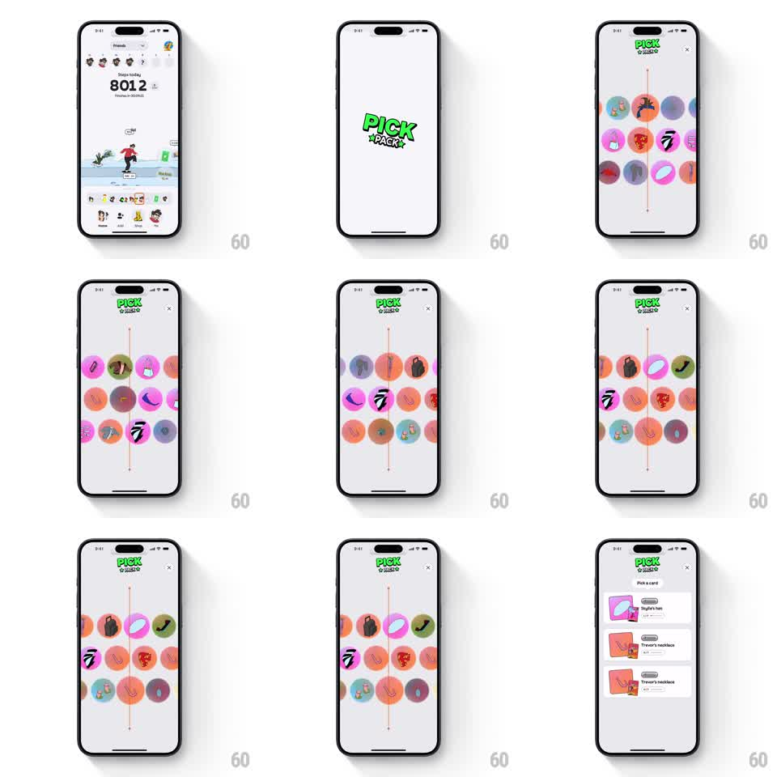

Media
Frame-by-frame

Rebuild this interaction 1:1: Stompers' pack opening - from the step-counter home, "PICK A PACK" launches a full-screen vertical slot machine of item icons that spins, decelerates, and stops on a line before dealing a "Pick a card" choice list.

Rebuild this interaction 1:1: Stompers' pack opening - from the step-counter home, "PICK A PACK" launches a full-screen vertical slot machine of item icons that spins, decelerates, and stops on a line before dealing a "Pick a card" choice list. ## Integration Integration: stack-agnostic spec - springs given as stiffness/damping, timed motions as duration + curve; map every value to your framework and animation library of choice. ## Scene Home: friends row, "Steps today 8012" counter, a sneaker character on a walking trail, pack shelf. Overlay: near-black screen, "PICK A PACK" graffiti-green wordmark top, close X, a vertical track of colorful circular item icons (hats, necklaces, accessories) streaming past a thin center line. End state: "Pick a card" sheet with 3 item cards (name, rarity chip, illustration). ## Motion spec Pattern: slot-machine spin -> deal, ~3.5s. - Overlay slides up from the bottom (350ms, ease-out). - The icon track starts spinning fast (translateY, ~1200px/s, linear) with slight motion blur on the icons. - After ~1.5s it decelerates (ease-out cubic) and locks so one icon sits exactly on the center line (spring ~300/20, 200ms) with a tick haptic. - The winning icon pulses (scale 1 -> 1.2 -> 1, 250ms). - The "Pick a card" sheet slides up over the track (400ms), its 3 cards staggering in bottom-to-top (100ms apart, spring ~350/20). ## Calibration - The spin must be fast enough to blur at peak; a readable spin kills the anticipation. - Deceleration is one smooth ease-out into the snap - no stepped slow-downs. ## Reduced motion Skip the spin: overlay fades in directly to the dealt cards (300ms). ## Don't miss - The center line is the judge: the stopped icon sits exactly on it, not near it. - Cards deal after the lock, never during the spin - the sequence is the suspense curve.